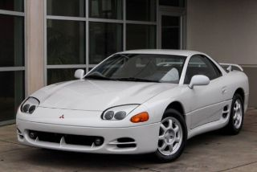
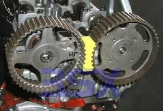

1994 Mitsubishi 3000GT SL (Z11A)

This is the 3000gt, Mitsubishi's last hoorah in the GT touring car division!
We found this car for 500$ on marketplace, as it needed a timing belt job, which is notoriously annoying on these cars. So, we bring it home, and spend the next month finding the parts and special tools needed to save this engine, just to learn the valves were bent. We knew it was a fair chance though. Other than it's currently non-running engine, this car is a 9/10 everywhere else. Near perfect paint, perfect interior, all the engine and transmission were complete. I can't wait to get it running and driving again.

Currently, this car has an engine with bad heads and beaten pistons. We're at a crossroads, where we can either pull and fully rebuild it's original engine, or find another healthy engine and swap it in. It mainly depends on what we can afford lol. Once we get it moving, we eventually plan to turbo, then manual swap this car. It will be incredible, soon.
VR4 Vs. SL
The 3000GT came in two main variants: The VR4, a Twin Turbo AWD monster pushing 320 Horsepower from the factory, or The SL, it's more modest Naturally Aspirated, Front wheel drive cousin, which still proved to be dominant on the streets.
Cam lockers are a NECESSITY!
For any of you who ever decide to fight the same timing belt job I did, on this 3000gt w Dual over head cams, i only have two words for you... CAM LOCKERS. The spinny bits on the outside of the engine HATE staying in time together. It can be a scary job if you don't have the proper tools, as those cams will springload, and like a spring, they'll go flying out of time, its scary for sure. Cam lockers hold them stable in a single (hopefully timed) spot. I will never do this job again without a set!
This car is nearly complete, thankfully. We're really happy with it's condition! We'll possibly wrap it, but there's not much else it needs. And for 500$!!! I was blown away when we found it. Even with it's bad engine, we came out like bandits.